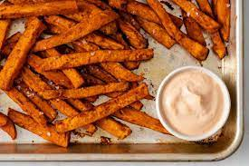

Crispy Sweet Potato Sticks

Description
These amazing sweet potato sticks are the perfect side to your main meal.
Ingredients
- 5 medium sweet potatoes, peeled and cut into long thin sticks
- 3 tbsp olive oil
- 1 tbsp salt
- 2 tsp paprika
- 2 tsp onion granules
- 1 tsp garlic granules
Steps
- Preheat the oven to 220C.
- Pour 1 tbsp of oil in 2 pans.
- In a bowl pour in the rest of the oil and the potatoes.
- Add the salt, paprika, onion, and garlic and mix with your hands.
- Spread out the potatoes in the pans so they are in one layer.
- Bake for approximately 20 minutes and turn up the temperature towards the end to make them extra crispy.